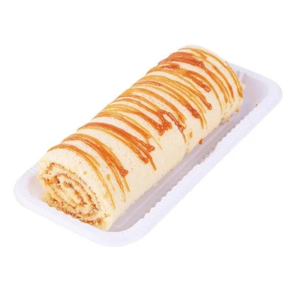

Receita de Bolo Rocambole

INGREDIENTES
- 10 colheres (sopa) de manteiga sem sal
- 10 colheres (sopa) de margarina
- 1 e meia xícara (chá) de açúcar refinado
- 6 ovos
- 2 xícaras (chá) de farinha de trigo peneirada
MODO DE PREPARO
- Em uma batedeira, com o batedor tipo raquete, bata a manteiga,
a margarina e o açúcar em velocidade alta até obter um creme.
- Reduza a velocidade, acrescente os ovos e deixe bater por mais 2 minutos.
- Adicione a farinha de trigo até obter uma massa homogênea e leve para gelar por 2 horas.
- Espalhe a massa em assadeiras finas retangulares (35 x 20 cm) untadas com manteiga e polvilhadas com farinha de trigo e asse em forno alto (220°C), preaquecido, por cerca de 2 a 3 minutos, deixando dourar rapidamente.
- Retire do forno e desenforme a massa em uma bancada polvilhada com açúcar e espalhe o recheio escolhido. Repita a operação de 2 a 3 vezes e, para o rocambole, enrole a massa com cuidado para obter o formato correto.
RENDIMENTO
- Massa: 2 Placas Retangulares
- Tempo de preparo: 140 MINUTOS